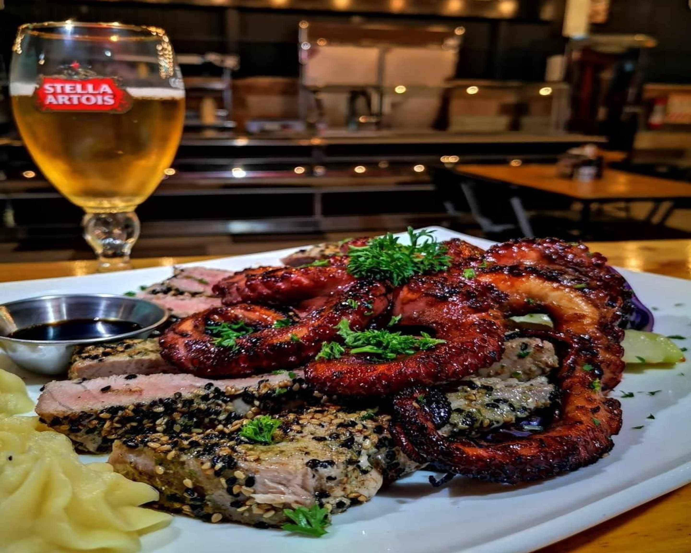
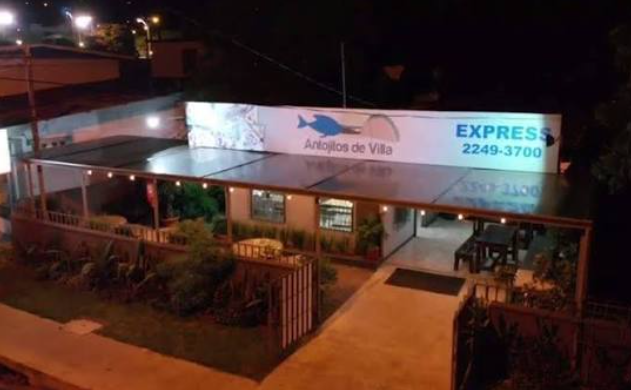
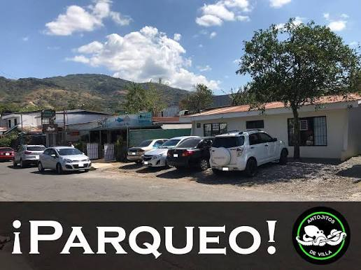

El mejor pulpo a la parrilla, ceviche fresco y la calidez costarricense en un solo lugar.
En Antojitos de Villa combinamos ingredientes marinos de máxima frescura con la auténtica sazón costarricense. Terraza abierta, salón confortable y la mejor atención.


Disfruta de la brisa en nuestra terraza o descansa en el área bajo techo. Diseñado para reuniones de amigos, cenas familiares y celebraciones.

Espacio amplio y seguro justo frente al local.
Asegura tu lugar en terraza o salón interior antes de que se agoten las mesas del día.
Reservar Vía WhatsApp